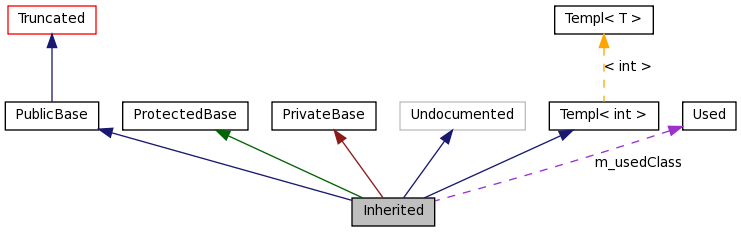

|
libs3a
$projectbrief
|
$projectbrief
|
$searchbox |
Choose your branch:
|
|
Get back to GitHub
|
or
|
Graph Legend
This page explains how to interpret the graphs that are generated by doxygen.
Consider the following example:
/*! Invisible class because of truncation */ class Invisible { }; /*! Truncated class, inheritance relation is hidden */ class Truncated : public Invisible { }; /* Class not documented with doxygen comments */ class Undocumented { }; /*! Class that is inherited using public inheritance */ class PublicBase : public Truncated { }; /*! A template class */ template<class T> class Templ { }; /*! Class that is inherited using protected inheritance */ class ProtectedBase { }; /*! Class that is inherited using private inheritance */ class PrivateBase { }; /*! Class that is used by the Inherited class */ class Used { }; /*! Super class that inherits a number of other classes */ class Inherited : public PublicBase, protected ProtectedBase, private PrivateBase, public Undocumented, public Templ<int> { private: Used *m_usedClass; };
This will result in the following graph:

The boxes in the above graph have the following meaning:
- A filled gray box represents the struct or class for which the graph is generated.
- A box with a black border denotes a documented struct or class.
- A box with a grey border denotes an undocumented struct or class.
- A box with a red border denotes a documented struct or class forwhich not all inheritance/containment relations are shown. A graph is truncated if it does not fit within the specified boundaries.
The arrows have the following meaning:
- A dark blue arrow is used to visualize a public inheritance relation between two classes.
- A dark green arrow is used for protected inheritance.
- A dark red arrow is used for private inheritance.
- A purple dashed arrow is used if a class is contained or used by another class. The arrow is labeled with the variable(s) through which the pointed class or struct is accessible.
- A yellow dashed arrow denotes a relation between a template instance and the template class it was instantiated from. The arrow is labeled with the template parameters of the instance.
-
$navpath
-
libs3a is part of TAPAS check out all parts of it on
github.
Documentation $generatedby
 1.6.1
1.6.1
$generatedby
1.6.1